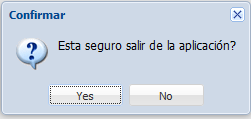

La aplicacion tiene definida las siguientes secciones:

Seccion 1: se encuentran las diferentes opciones del perfil actual.
Seccion 2: se muestra el login del usuario y el boton SALIR. Cuando se hace click en SALIR se visualizara la confirmacion de la accion:

Otra forma de salir de la aplicacion es presionando el boton <ESC> saldra la misma pregunta de confirmacion.
Seccion 3: se encuentra el area donde se desplegara el cuerpo de los diferentes formularios y consultas.
Seccion 4: se encuentra el pie del sistema, donde se visualiza la fecha actual, hora actual y la version del sistema.
Created with the Personal Edition of HelpNDoc: Full-featured Documentation generator